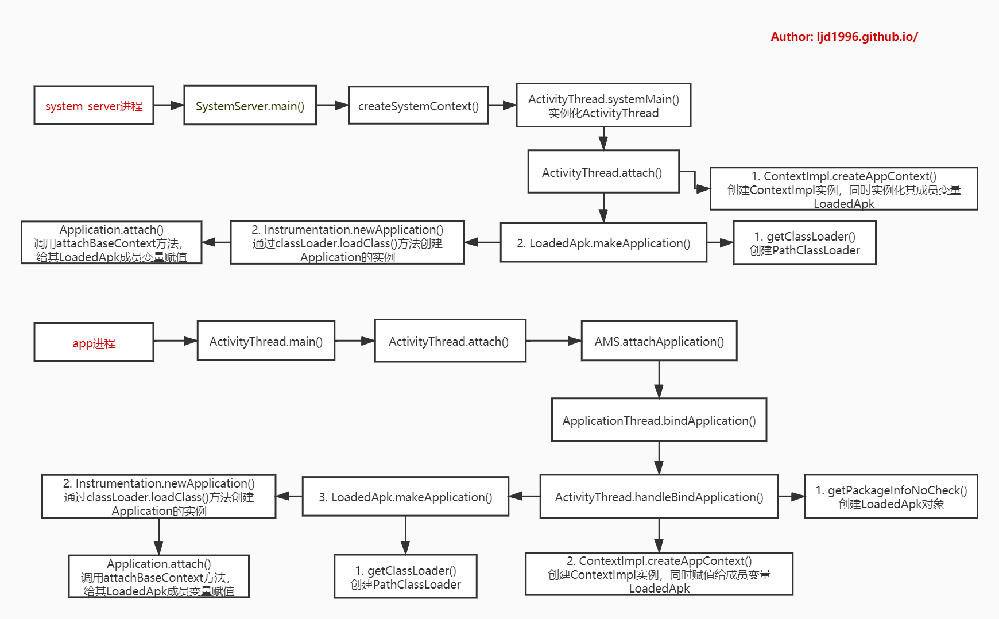

概述
android系统会为每个程序进程的运行时创建一个Application类的对象且仅创建一个，且application对象的生命周期是整个程序中最长的，它的生命周期就等于这个程序的生命周期。因为它是全局的单例的，所以在不同的Activity，Service中获得的对象都是同一个对象。所以通过Application来进行一些，数据传递，数据共享等，数据缓存等操作。
注：本文基于Android 9.0源码，为了文章的简洁性，引用源码的地方可能有所删减。
多进程
不同的进程会有自己的Application实例，如果应用中采用多进程方式，onCreate方法会执行多次，可以根据不同的进程名字进行不同的初始化。
1 | public class MyApplication extends Application { |
生命周期
onCreate
在创建应用程序时创建
onTerminate
当终止应用程序对象时调用，不保证一定被调用，当程序是被内核终止以便为其他应用程序释放资源，那么将不会提醒，并且不调用应用程序的对象的onTerminate方法而直接终止进程
onLowMemory
当后台程序已经终止资源还匮乏时会调用这个方法。好的应用程序一般会在这个方法里面释放一些不必要的资源来应付当后台程序已经终止，前台应用程序内存还不够时的情况。
onTrimMemory
当系统回调确认该进程是时候回收不必要的内存了，这将例如发生在后台时,没有足够的内存保持尽可能多的后台进程运行一样。一般发生在点击Home键、Task任务菜单键时被执行。
onConfigurationChanged
配置改变时触发这个方法
ActivityLifecycleCallbacks
概述
ActivityLifecycleCallbacks 是用来监听所有 Activity 的生命周期回调。接口定义如下：
1 | public interface ActivityLifecycleCallbacks { |
使用：
1 | public class MyApplication extends Application { |
管理Activity栈
Activity 页面栈，最常用的实现就是用来完全退出应用。
1 | private static HashMap<Integer, WeakReference<Activity>> sActivities = new HashMap<>(); |
获取当前Activity
1 | public Activity getCurrentActivity() { |
判断应用前后台
方法一
1 | // ActivityLifecycleCallbacks.java |
方法二
1 | public class AppStatusObserver { |
1 | // ActivityLifecycleCallbacks.java |
原理
system进程和app进程都运行着一个或多个app，每个app都会有一个对应的Application对象。本文将解析以下两种进程创建Application的过程：
- system_server进程；
- app进程；
system_server进程
SystemServer.main
1 | // SystemServer.java |
createSystemContext
1 | private void createSystemContext() { |
ActivityThread
构造函数
1 | public final class ActivityThread extends ClientTransactionHandler { |
systemMain
1 | public static ActivityThread systemMain() { |
创建完ActivityThread对象，接下来执行attach()操作：
attach
1 | private void attach(boolean system, long startSeq) { |
ContextImpl
构造函数
部分成员变量：
1 | final ActivityThread mMainThread; |
构造函数：
1 | private ContextImpl( ContextImpl container, ActivityThread mainThread, |
createSystemContext
1 | static ContextImpl createSystemContext(ActivityThread mainThread) { |
createAppContext
1 | static ContextImpl createAppContext(ActivityThread mainThread, LoadedApk packageInfo) { |
LoadedApk
构造函数
1 | private final ActivityThread mActivityThread; |
makeApplication
1 | public Application makeApplication(boolean forceDefaultAppClass, |
getClassLoader
1 | public ClassLoader getClassLoader() { |
Instrumentation.newApplication
1 | // Instrumentation.java |
接着是Application.attach()方法：
1 | // Application.java |
attch方法的主要功能:
- 将新创建的ContextImpl对象保存到Application的父类成员变量mBase;
- 将新创建的LoadedApk对象保存到Application的成员变量mLoadedApk;
如果想通过反射获取应用的ClassLoader，需要从LoadedApk对象中获取，LoadedApk对象也同样可以通过反射方式获取，它的实例在许多对象中都有引用，比如说：ContextImpl和Application中都有引用：
- ContextImpl：如上代码中可以看到，在
Application#attachBaseContext(Context base)回调中可以拿到ContextImpl实例，进一步可以获得LoadedApk对象； - Application：应注意到，在调用了attachBaseContext之后，Application中的mLoadedApk字段才被赋值，因此在attachBaseContext中反射获取到的LoadedApk会是null，可以在onCreate回调时再尝试反射调用。
App进程
ActivityThread
main
1 | public static void main(String[] args) { |
这是运行在app进程，当进程由zygote fork后执行ActivityThread的main方法。
attach
1 | private void attach(boolean system, long startSeq) { |
mgr.attachApplication是通过Binder方式调用AMS中的方法。
H
在H内部类中定义了许多种message类型：
1 | class H extends Handler { |
AMS.attachApplication
1 | public final void attachApplication(IApplicationThread thread, long startSeq) { |
ApplicationThread.bindApplication
1 | public final void bindApplication(String processName, ApplicationInfo appInfo, |
sendMessage方法最终走的是mH.sendMessage(msg)，mH是H类型：
ActivityThread.handleBindApplication
当主线程收到H.BIND_APPLICATION，则调用handleBindApplication：
1 | // ActivityThread.java |
创建LoadedApk对象，并将将新创建的LoadedApk加入到mPackages，也就是说每个app都会创建唯一的LoadedApk对象。此处aInfo来源于ProcessRecord.info变量，也就是进程中的第一个app。
LoadedApk.makeApplication
getClassLoader
该方法跟system_server一样，其内调用的getClassLoader也调用了createOrUpdateClassLoaderLocked方法：
1 | private void createOrUpdateClassLoaderLocked(List<String> addedPaths) { |
Instrumentation.newApplication
逻辑与system_server类似。
总结
App进程的Application创建过程，跟system进程的核心逻辑都差不多。只是app进程多了两次binder调用。其中newApplication方法中通过类加载器加载了Application Class对象，并通过其newInstance方法创建了Application实例。
